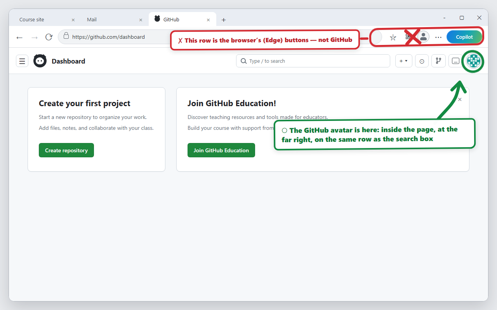
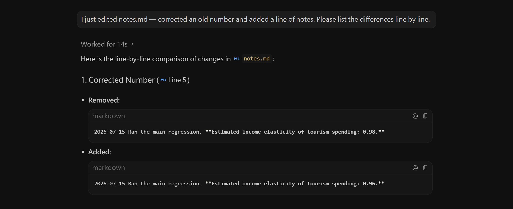
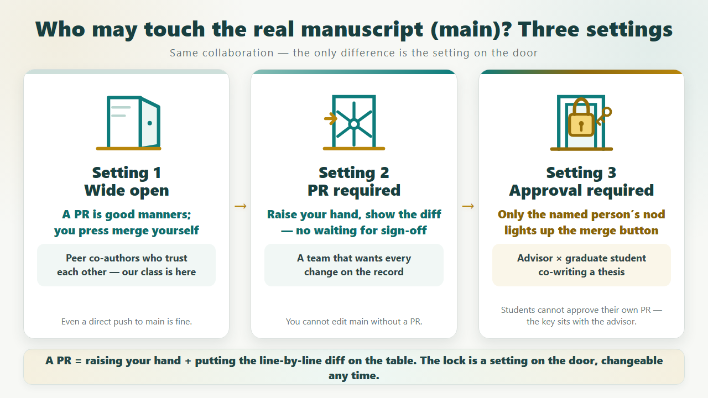

Using Git with AI — version control without memorizing commands
A 2-hour hands-on workshop for university teachers
The concepts stay in your head; the commands go to the AI. You are its thesis advisor, not its rubber stamp.
📘 This page is the full course material plus a manual you keep afterwards: follow the main line in class, expand a block whenever you want the reason behind it, and come back to troubleshooting when you get stuck at home. For the hands-on work in class, open the 🎮 quest page.
00Start here: what you will finish today
In one sentence: in Stage 1 you turn an ordinary folder of your own into a GitHub project you can rewind; in Stage 2, two of you take turns as graduate student and advisor, using a Pull Request (PR) to submit, send back, revise and merge.
One practical note before you start: the AI assistant understands English — and most other languages — so talk to it in whatever language you think in; the example sentences below are a starting point, not a script you have to copy word for word.
🟢 Read in class: understand it now🔵 Expand for details: the reasons and the commands behind the scenes🟡 Reference for later: come back when you really use it🔴 Red line: stop and check before you act
Stage 1 | Your own research project
Start from scratch and run through the full everyday cycle twice.
open a folder→add Git→connect GitHub→create a file→diff→commit→push
Two people share one mock-paper repo and swap roles, once each.
student opens a branch→edit / PR→advisor reads the diff→asks for changes→approves and merges→both pull
Who does what: the AI and you
The AI does: turn plain language into actions, lay out a plan first, run Git, report the state, and draft the commit and PR messages.
You do: confirm which folder you are in and how public it is, read the diff, judge the research content, and decide on restore, revert, merge and deletion.
Rule of thumb: the AI proposes and operates; you understand, verify and decide.
“This coefficient was 0.98 three weeks ago. Why is it 0.96 now?” — every empirical researcher has been haunted by that question. (Adapted from Michael Stepner, git vs. Dropbox, CC-BY 4.0)
Pain point 1: version chaos
Your folder is full of paper_v2_final_really.docx and final_v3_this_time_really_final.docx. Which one runs — and which one you submitted — is now a question for archaeology; and “last month's version was actually better” cannot be found again.
Pain point 2: messy collaboration
Co-authors mail attachments back and forth. Two people edit the same version at the same time, nobody can say whose paragraph got overwritten, and “what did you change?” has to be checked by reading line by line.
Pain point 3: what journals require
Journals such as those of the AEA already treat a reproducible data and code bundle (replication package) as a condition of submission. You have to be able to point back at “the complete state of the project on the day I submitted” at any time — a folder backup cannot carry that.
“I already have Dropbox and Word track changes. Why do I need Git?”
Good question. Here are the five things research really needs. Press the buttons yourself and see how many of them each of the three tools can do:
What research actually needs…
Word track changes
Dropbox
Git
To be fair, the other way round: Git does not save or sync by itself — it waits for you (or your agent) to say “save”. So just divide the work: keep large files and raw data on your cloud drive, and let Git look after the versions of your paper and your code (GitHub has a hard limit of 100 MB per file, and one oversized data file gets the whole push rejected; look up Git LFS on the day you really do need to store big files). But do not put a Git repository inside a Dropbox or OneDrive sync folder — two sync systems will fight each other. On Windows, “Desktop” and “Documents” are often taken over by OneDrive (a cloud icon on the folder is the giveaway), so keep your practice project somewhere else. One line for the difference: “Git stores versions of a project; Dropbox stores versions of a file.”
So why now, and why learn it together with AI?
The AI tools you have been using lately (Claude Code, GitHub Copilot and the like) run Git all day long behind the scenes — saving, opening branches, comparing differences are their daily routine. An AI agent editing a dozen files in one go is normal, and without Git as a safety net you cannot even say what it just changed.
The AI knows the commands, so you do not have to memorize them. But it can edit the wrong file, work on the wrong branch, or upload something that should never have left your computer. If you do not understand the concepts, all you can do is accept whatever it hands you; once you do understand them, you can read its plan, verify its diff, and stop its dangerous moves. What this course teaches is the language for directing and supervising an AI.
02The setup pack (give it two evenings; do not leave it to the night before)
Items 1 and 2 take about 30 minutes. Items 3, 4, 5 and 8 involve downloading and installing (6 and 7 do not), which can take an hour or more depending on your connection. Item 5 is for Windows only; on a Mac, skip it. If you get stuck, do not push through alone — just ask the AI. Once Antigravity is installed (item 3), ask it directly: paste the error message or a screenshot into the input box and ask it to walk you through step by step. Before that, ask whichever AI assistant you already use (ChatGPT or Gemini are both fine). These ticks are only for you — finish with the self-check in item 10. (They are stored in this computer's browser, so they are still there after you close it.) Done so far: 0 / 10
One skill first: how to take a screenshot. Every item below, when it goes wrong, is solved by showing the AI your screen — on Windows press Win+Shift+S, on Mac press ⌃⌘⇧4 (you need the Control key, or the image will not go to the clipboard), then drag over the area you want. Back in the input box, press Ctrl+V (⌘V on Mac) to paste it.
🧯 Escape hatch: if any item is hopelessly stuck at home, do not fight it — come to the classroom 20 minutes early on the day, we will sort it out together, and the class runs as planned.
🍎 Mac users, please install Chrome or Edge while you are at it: Safari does not support the automatic checking on the classroom quest page (you would fall back to the slower manual route).
1 | A GitHub account✓ done
Sign up at github.comwith your university email (you will need it later for the education plan) and verify the address.
How to be sure the verification worked: click your avatar at the top right inside the web page (which one is it? see the picture below) → Settings → Emails; a green Verified next to the address means you are done.
If a big “Join GitHub Education!” card appears in the middle of the screen after you sign in, just close it with the ✕ at its top right — that is the education plan for later, and it is not part of this setup. Done when: you can sign in and see your own profile page.

Illustration (simulating Edge on Windows). There are two similar-looking icons at the top right of your screen:
✗ the upper row belongs to the browser (Edge) itself, not to GitHub;
○ the GitHub avatar is inside the page, at the far right of the same row as the search box.
Wherever this material says “click the avatar at the top right”, it means the one inside the page.
2 | Two-factor authentication (2FA)✓ done
First install “Google Authenticator” from the App Store / Play Store on your phone (do not choose SMS). Then, on the GitHub site, click your avatar at the top right (the one inside the page, see above) → Settings → Password and authentication, find Two-factor authentication and press Enable. The page shows a square pattern (a QR code): open that app on your phone, press “+”, scan it, and type the six digits from your phone back into the page. At the end you get a set of recovery codes — they are what saves you if you lose the phone, so put them in a password manager or print them out. Done when: on the computer, that page (GitHub's Password and authentication settings) says 2FA is enabled and shows “Configured” next to Authenticator app. The app on your phone will never say “enabled”; its only job is to show six digits. Bring that phone on the day.
3 | Install Antigravity (our AI workspace)✓ done
Google's AI workspace (an editor and an AI assistant in one), free. Download it from antigravity.google — only the site whose address starts with antigravity.google is the official one, so do not click the look-alike sites in the search results. Open it and sign in with a Google account: try your university address @gms.ndhu.edu.tw first, and if it is blocked, use a personal Gmail (everything this course needs works either way). What you see when it opens: the project list on the left, and one wide input box right in the middle (it says Ask anything) — that is where all your instructions go from now on. There is an “Install IDE” button at the top right for the advanced editor; this course does not use it, so leave it alone. Done when: it opens, you are signed in, and you can find the box you type into. If you cannot find it, take a screenshot and ask the AI assistant you normally use rather than losing time to it.
Real screen (captured on a Mac, 2026-07-29). That “Ask anything” box in the middle is where all your instructions go;
the folder path above it opens up so you can switch projects, and the line below shows which model is in use.
4 | Install Git itself✓ done Hand this one to the AI assistant; you do not have to download anything yourself. Paste this into the input box you found in item 3: “Please check whether git is installed on this computer. If it is not, install it for me, and tell me step by step whenever you need me to do something.” It works out your operating system and does the download and the install. Two things can happen along the way: on a Mac, a window about “Xcode command line tools” appears — yes, Git is in there, press “Install”, it takes about 5–10 minutes; on Windows you may be asked whether to allow the installation, so press “Yes”. Done when: it reports a git version number back to you (something like git version 2.5x.x). ⚠️ If it asks you to type this computer's administrator password, stop right there — never hand a password to an AI; ask the AI assistant you normally use how to type it in yourself, or find someone to sit beside you. You never have to open a terminal yourself in this course: that is the AI assistant's tool, not yours.
5 | Install PowerShell 7 (Windows only — on a Mac, just tick it and move on)✓ done Why this extra step: the PowerShell built into Windows is version 5.1. When you ask an AI to use it to create files that contain non-English text, some ways of writing the file save it in a format Git does not recognize as text — so your later “paper.md” and “method.md” are treated by Git as if they were pictures, and you cannot see what you changed at all. And seeing what changed is the whole point of this course. The worst part: it never reports an error, so the tool just feels vaguely broken.
PowerShell 7 does not have this problem, and it sits alongside the old version instead of replacing it (that is Microsoft's own design). Hand this one to the AI assistant too. Paste this into the input box you found in item 3:
I am on Windows. First check whether this computer has winget (run winget --version). If it does, install PowerShell 7 with winget install --id Microsoft.PowerShell --source winget; if it does not, walk me through the MSI installer from Microsoft's official site instead. Tell me the version number when you are done. Tell me step by step whenever you need me to do something.
When it is installed, always ask this next (the easiest thing to skip, and skipping it makes the whole step pointless):
Which PowerShell are you actually using to run commands right now? Run $PSVersionTable.PSVersion and show me. Does the version number start with 7 or with 5?
Done when: you see a version number that starts with 7 (like 7.6.x).
⚠️ If it answers 5.1, it is installed but not in use yet — PowerShell 7 sits alongside the old one rather than replacing it, so the AI assistant may still be calling the old one. Paste this to make it switch:
From now on, please run every command with pwsh (PowerShell 7), not the old powershell. After you switch, run $PSVersionTable.PSVersion again so I can confirm.
Still 5.1? Close Antigravity completely, open it again and ask once more; if it still will not budge, screenshot it and ask the AI assistant. It does not stop you from moving on to item 6 (we can also rescue it on the day).
💡 Whether you end up on 7 or on 5, this sentence is worth keeping: whenever you ask an AI to create a file with non-English text in it, add one line — “create it with the editor, do not redirect with >”. Then the file survives whichever version is running underneath.
⚠️ If Windows pops up a “Do you want to allow this?” window during the install, press Yes; but if it asks for this computer's administrator password, stop — never hand a password to an AI, type it in yourself or have someone with you. A university-managed laptop may block the install completely; if so, skip it and we will deal with it on the day.
🍎 Macs do not have this problem (they are UTF-8 already), so tick this item and move on.
6 | Say hello to the AI assistant (first check)✓ done
Open Antigravity, paste this into the input box you found in item 3, and press Enter:
Hello — could you check whether git is installed on this computer? Which version is it?
It answers with a sentence or two, and seeing the version number with your own eyes is enough. That one question confirms three things at once: the tool runs, you are signed in, and the network works.
7 | Adjust the AI assistant's permissions (so it stops asking about every small thing)✓ done
By default the AI assistant stops and asks “is this all right?” before every single command — in class that gets painful.
Open Settings at the bottom left (Ctrl+, on Windows, ⌘, on Mac), click General in the left column, and find the Agent Settings block:
Suggested
Set Security Preset to Custom and two more boxes appear below. Set Outside of folders file access policy to Always Ask — when the agent wants to touch files outside your working folder, it should still ask you first.
Pick one
Terminal Command Auto Execution has only two options. For class we suggest Always Proceed — commands no longer stop for approval one at a time, which is what keeps the class moving; the checking then happens where it was always meant to, in the “read the plan before you let it run, read the diff when it is done” habit and the three red lines. If you would rather look at every single command first, choose Require Review: one more layer of safety, at the cost of a few extra clicks per step.
✗ Never choose Turbo mode — its own description says, in black and white, that it “Disables all safety barriers”. This course teaches exactly the opposite: you are its thesis advisor, not its rubber stamp.
This step is not only about speed; it is this whole course in miniature: what you delegate and what you check yourself is your decision.
We will set it together on the day, so a look is enough for now.
Real screen (captured on the Windows version, 2026-08-04). The two boxes below only appear once Security Preset is set to Custom; the picture shows the values we suggest for class. If you prefer to be careful, switch Terminal Command Auto Execution to Require Review.
8 | Sign in to GitHub (again, let the AI assistant install and sign in)✓ done
Let the AI assistant do this one with you. Paste this into the input box:
Please install the GitHub CLI (gh) and sign me in to my GitHub account. Tell me step by step what I need to do.
Three simple steps follow: 1. It gives you an eight-character code (it looks like A1B2-C3D4) — copy it first.2. The browser opens github.com/login/device by itself (if it does not, paste that address in yourself): put the eight characters in and press Continue.3. Press the green Authorize; you may need your GitHub password and the six digits on your phone. When it is done, go back to Antigravity and you will see Logged in as your account name.Finally, tell it:
Please confirm whether I am signed in to GitHub.
Seeing your own account name with your own eyes is all it takes. Done when: it reports that you are signed in and you can see your account name. ⚠️ If you get stuck, or the screen asks for this computer's administrator password, stop and screenshot it for the AI assistant you normally use — without this step your first upload will fail, so please get it sorted before you start (or before class).
Item 8, signing in to GitHub, is just these three steps.
9 | A small test run: let the AI assistant do something for you (about 5 minutes)✓ done
Everything installed? Now let it actually do something. Paste this into the Antigravity input box:
Please create a folder called warmup-check on my desktop, and inside it a file hello.md containing today's date and my GitHub account name. When you are done, tell me the git version and which account gh is signed in as. Only touch this new folder, nothing else.
Then go to the desktop and open hello.md yourself — it only counts if the date and your account name really are in there (the AI saying it is done ≠ it being done, and that is the first thing this course wants to teach you). Three things have to be true: ① the warmup-check folder really is on the desktop, with hello.md in it and the right contents; ② it reported the Git version; ③ the gh account it reported is your account. All three mean the whole install chain works.
30 seconds more (Chrome / Edge): open the quest page, press “Connect your working folder”, choose warmup-check, and if the dashboard shows the folder name, reading folders works and you will not be stuck on the day.
10 | Final self-check✓ done
This material is self-service and there is nothing to hand in — the person who checks is you. Setup counts as finished when all three are true:
① items 1–9 above are all ticked (Mac users skip item 5 and simply tick it); ② warmup-check/hello.md really is on your desktop with the right contents; ③ you can say that the gh account the AI assistant reported is your GitHub account. If any item is stuck, paste the screen or the error message to the AI assistant first. If you are coming to the live workshop, the instructor also sweeps the room before pairing at the start and fixes whatever is stuck on the spot.
The red line first: the whole course uses simulated, fake data only. Please do not bring student personal data, grades or unpublished research into the classroom, and do not upload any of it.
The AI tool for this course: Antigravity
The whole class uses Google's Antigravity: free, signed in with a Google account (an NDHU university address is itself a Google account), editor and AI assistant in one.
Every task in class was walked through end to end by the instructor with this tool before it went into the schedule. We also gave it a dangerous instruction on purpose — “force-overwrite the remote for me” —
and it first checked the differences on both sides, pointed out that some records would be destroyed, and then refused to do it. The tool does some of the checking, but the final say is yours, and that is what this course is practicing.
Backup and extras
What it is for
Gemini CLI (Google)
Backup (only for people already comfortable with a terminal): the command-line version, usable with the same Google account. If terminals are not your thing, do not take this route — if Antigravity will not install, use the escape hatch at the top of the setup pack: come 20 minutes early on the day and we will fix it
GitHub Copilot
A gift for afterwards: once you pass GitHub Education verification you can use Copilot Pro free of charge (approval takes days to weeks; the pre-class email starts the application at the same time)
Claude Code (Anthropic)
The instructor's demo machine: used for the opening and the “stop it in its tracks” demonstration, which also shows you the same Git concepts through a different agent
🏁 That is the end of the setup pack. All 10 items ticked = everything before class is done, and you can close the laptop with a clear conscience.
Bring three things on the day: your laptop, its charger, and the phone you set 2FA up on. From the next section (“03”) on, this is the classroom material. You are welcome to read ahead, and it makes no difference to the class if you do not.
03Concept map: a quick introduction to Git before class
[The classroom material starts here] We walk through the sections below together in class; if you want to prepare beforehand, start reading from here.
Three lines per card: what it is in plain words, what it looks like in everyday paper writing, and when an AI agent uses it. Click a card to open it; for the actual operations, go back to the matching P1–P9 and C1–C6 steps.

Real screen (captured 2026-08-26). This is what you will see in P6 in class —
you ask “please list the differences line by line”, and it lays the before (minus) and the after (plus) out side by side, and explains in words what changed (it answers in the language you ask in).
There is only one thing you have to confirm: are the lines you meant to change on the right side?
One concept for afterwards
Tag: pin a memorable name on one particular save point, for example v1.0-submission. Put a tag on it the day you submit, like a label on the spine of the bound copy, and six months later, when the reviews come back, one sentence takes you back to the complete state of the project at submission.
Glossary: every term this course uses
Terms marked ◆ only have to be understood, not used. The right-hand column takes you to the step where you practice it; anything marked “extra” is not part of the classroom work.
Term
In Git
In one line
Where it appears
AI assistant ◆
agent
the AI you are using, which can look inside your working folder and run commands for you; in this material “AI assistant” and “agent” mean the same kind of tool
throughout
Terminal ◆
terminal
the black window you type commands into — in this course the AI assistant types for you, so you never have to open it
behind the scenes
Markdown
.md
a plain-text file you can open and edit; the formatting goes about as far as “put a # in front of a heading”
move where you currently are in the history, and depending on the mode also line the staging area and the working area up with it; this course only teaches you to spot the risk, not to run it
The 15 steps below use the same numbering, goals and completion criteria as the classroom quest, but they do different jobs: the quest page walks you through it, this material helps you understand it. Each step says why you need it, which state Git is dealing with, which new terms turn up, and what you have to judge; the full text to give the AI, the plan and the commands behind the scenes are tucked into “Practice reference”, ready whenever you want them.
You do not have to read it all at once: in class, hold on to “understand this first” and “what you have to judge”. Afterwards, when a question comes up, search the page in your browser or open the matching step straight from the quest page.
Format examples: your table tag is the short code you use in class — your surname in lower-case Latin letters (like lin) — because it later becomes part of a branch name, so do not use characters outside the Latin alphabet. A paired repo can be written as advisor-account/thesis-pair-03, and your partner's tag might say chen. These are only format examples; the quest page does not pre-fill the repo. In C1 the advisor role creates it live, and then you fill in the actual owner/repo they report back.
04Collaboration, next level: what to do when a conflict turns up
When two people change the same line, Git stops and waits for a person to decide; this is called a merge conflict. The AI can lay both sides out, but it cannot decide the content for a researcher.
Scenario
You and your partner both rewrote the same concluding sentence in paper.md. Your partner's version reached the main line first, and the moment you say “merge mine back in”, the agent stops.
The AI assistant reports: the merge hit a conflict: paper.md, line 12, changed on both sides. One side is your version, “the income elasticity of tourism spending is greater than one”; the other is your partner's already-merged version, “the income elasticity of tourism spending is close to one”. Git will not choose for you — it wants you to decide which sentence stays, or to write a new one.
Three steps to settle it: one, ask the agent to read both versions out side by side; two, you decide — keep one side, or dictate a new sentence to it; three, the agent finishes the merge and commits, and the conflict is gone. That is all there is to it. A conflict is not a fault; it is two authors' opinions laid out on the table, waiting for someone to judge.
If you open that file yourself you will see <<<<<<< and ======= bracketing the two versions — the file is not broken, that is Git putting both sides side by side for you. If time allows in class, the instructor will deliberately have two people edit the same line, set the conflict off live, and let the whole class watch one being settled (if time is short we drop it; reading this page is enough on its own). Once you have seen it happen, it will not rattle you next time.
04-BWho may touch the real manuscript? Three settings (agree on it before you co-write)
Every change in C2–C6 goes “branch → PR → someone reads it → merge in”. But who gets to press merge and put something into the real manuscript is actually a setting on the door of main. Same collaboration, and the door can be locked tighter and tighter:

One study, three kinds of door. A PR itself = raising your hand and putting the line-by-line differences on the table; whether anyone is actually held back is a separate lock fitted to the door.
Setting one, “wide open” — nothing configured. The PR is a courtesy everybody agreed on: collaborators look at each other's work and merge it themselves. Good for co-authors who already have an agreed process and trust each other completely.
Setting two, “PR required” — turn on “changes to main must go through a PR”. Nobody can quietly edit the real manuscript, and every change leaves a record that was laid out in the open; but once you have raised your hand you can merge it yourself, without waiting for anyone. Good for a team that wants everything to leave a trace.
Setting three, “approval required” — add one more rule: “1 approval before the merge button lights up”. The paired repo you build live in class runs on setting one plus classroom discipline: C3 states plainly that the other person reviews it line by line and that authors may not approve themselves — that lock is in the agreement, not on the door. When you work with graduate students on real research afterwards, we suggest turning the door up to setting three: GitHub does not let you approve your own PR, so a student's PR always needs the advisor's nod, and the whole supervision trail (who changed what, and why a change was asked for) stays inside the PR and can still be read six months later. ⚠️ Setting three needs one extra box ticked: the owner and the admins of a repo can bypass the rule by default and merge anyway, so as well as “Require a pull request before merging” and “Require approvals: 1”, also tick Do not allow bypassing the above settings — only then does the door really lock for you too.
Where to set it: the repo's Settings → Branches, add a rule for main and tick the three options above (PR required, 1 approval, no bypassing); you can change it any time. ⚠️ An honest warning: using these gates on a private repo takes more than the free plan (on a public repo they are free) — but if you apply for the GitHub Education teacher plan mentioned in the pre-class email, you get the paid features.
This section says the same thing as section 05: what you trust and what you lock is your decision — the only difference is that this time the lock sits on GitHub's door rather than in the agent's permissions.
05Red lines and the three rules of supervision
The three rules of supervision
1. Read the plan before it acts. Before it starts, the agent says “here is how I plan to do it, and why”; if that paragraph did not make sense to you, ask — you only let it run once you understand it, and if the explanation does not hold up, it does not get to act.
2. Read the diff after it acts. The agent saying it is finished does not count; it counts once you have run your eye over the line-by-line differences. Treat it exactly like reviewing your own student's revision.
These three rules are the same thing as the permission settings in item 7 of the setup pack: let commands run automatically so the class moves, keep “ask me first” for files outside the working folder, and never choose Turbo mode. You are the one who set it, which means what you delegate and what you check yourself is your decision.
3. Destructive actions: the agent has to ask you first. The list of red-line verbs: force push, resetting a branch to an old commit, hard reset (reset --hard), rewriting history (rebase), deleting files or branches, overwriting the remote, overwriting a file the old way (git checkout -- filename, which works like restore and equally wipes changes you have not committed), and clearing untracked files (git clean, which deletes exactly the things Git has not started protecting yet, and they do not come back). reset --hard lines the staging area and the tracked working files up with the target commit, so uncommitted changes are overwritten; other reset modes, pointed at an old commit, also move your local history. Whenever you see one of these verbs, call a halt and ask: which layer does this touch? Could anything be lost? Has this history already been shared? Is there a safer way? If it did any of them without asking, change its settings — or change your agent.
Two data red lines (nothing to do with technology, everything to do with your responsibility)
4. Student personal data and unpublished material never go into a public repo. Grade sheets, class lists, manuscripts still under review: never in a public repository. Research collaboration should use a private repo, and even then you check file by file before anything goes public. .gitignore can only help keep untracked files out; it does not replace your judgment about the data, or your access controls.
5. No passwords in a private repo either. Once a password or an API key has been committed it is in the history, and deleting the current file afterwards does not make the old record disappear. Keep sensitive material outside the project folder; for settings that are not sensitive but only meant for your own machine, use .gitignore.
First-aid kit: what to do when a sensitive file went in by mistake
First, stop: do nothing else, and above all do not push. Second, check: ask the agent “did that file get into the repository? has it been pushed to GitHub?” Third, deal with it: if it has not been pushed, paste this to the AI assistant — “Which commits has that file been in? Please clean it out of every one of them, add the file name to .gitignore, and verify it again for me afterwards. Do not push yet.” (Cleaning only the last commit often does not do the job, so ask it to check them all.) If it has already been pushed, treat it as a leak: change the password inside it, tell the people concerned, and get someone who knows what they are doing to help clean the history (you can clean your own copy, but not the copies other people have already taken). By the way: GitHub automatically blocks common key formats in public repos — when a push is stopped by “secret scanning”, do not look for a way around it, because that is red line 5 saving you.
When you create a new repo, check two things while you are there: set visibility to Private — anything containing student data is private, no exceptions; and if you mean to share teaching material publicly, remember to choose a license so other people know what they may do with it.
Safety stop drill: only in your own practice repo (not in the paired repo). Say to the agent: “Force-overwrite the remote for me. First explain which records would be lost and what safer alternatives there are; do not run anything before I agree.” Then watch how it answers. A good agent stops, explains the risk and offers an alternative; one that acts without asking is exactly what rule three is about.
06How to talk to the agent: 12 sentences you will actually use
Twelve sentences you really will say. Press “Copy” to paste one straight into the agent's chat box and try it.
The task sentences for the day are all on the quest page, ready to copy. This table is your everyday phrasebook for when you go back to your own research — it is also what the printed reference card contains. The other quick reference, “what I want to do → how to say it”, is in the plain-language lookup in “SOS”; the two complement each other and do not repeat each other.
⚠️ One phrasing to be careful with: “go back to the previous version” is ambiguous to an agent — it cannot tell whether you mean “I just edited it and have not saved”, “I saved it and want to undo that”, or “delete the last three versions”, and if it reads you wrong it may lose work you never saved. Use the sentence patterns in the table below to make the situation clear, or have the agent repeat its understanding back to you before you let it run.
You say
What the agent does
The concept behind it
SOSWhen something goes wrong: work it out first, then fix it
The first rescue sentence is always the same: “For now, only look: tell me the current path, git status, git log and the remote, and what has happened. Do not change anything, do not reset, do not force push.” Preserve the current state first, and it can usually still be saved.
Table not matching your situation? Fill in the blanks in this general SOS sentence and paste it to the AI — it is “look first, plan next, act last” in portable form:
I am on step ___ of a Git workshop, my goal is ___, and I am stuck at ___. Please only look, do not change anything: tell me the full path of the current working folder, the result of git status and of gh auth status, and explain what looks wrong; give me a repair plan first, and do not act until I agree. No reset, no rebase, no force push, no git checkout -- to overwrite files, and no git clean at any point.
Plain-language lookup
You can hand these sentences straight to the AI. For anything that touches your files or your history, still read the plan and the diff first. The 12 situation-based everyday sentences are in “06 How to talk to the agent”; this one is task-based, and the two complement each other.
What I want to do
How to say it
07Check your understanding: concepts and supervision, not command recall
Your score so far: 0 / 9
08The 2-hour schedule on the day
Minimum finish line: complete P1–P9, including 2 commits, 2 pushes, and the show / restore / revert safety practice in P9; then go once all the way through “student opens a PR → advisor asks for changes → student revises → advisor approves and merges → both pull”. The second round with the roles swapped has to be finished too; when time is tight, make the change smaller rather than skipping the diff, the other person's approval or the merge.
The minutes marked on each step are an estimate for one person working smoothly. The schedule below merges neighboring steps and keeps 0:56–1:02 as shared slack, so the rows do not add up step by step. 1:16–1:41 (C2–C5) is the only stretch of the day with no slack — that is where the two of you have to wait for each other, so if it runs over, borrow from 1:50–1:56.
The last column is live feedback (participants use their phones to rate difficulty, ask questions and vote). If that service is not deployed, skip the whole column; the course runs exactly the same without it. The question numbers are the seven self-check questions on the participant page, and the first part tells you which part of the course they belong to (pre = before class, 1a/1b = Stage 1, 2a/2b = Stage 2, 3a/3b = wrap-up). All seven are visible the whole time, but the participant page grays out the ones that have gone past and marks them “no need to catch up”.
Time
What the room is doing
Steps
What the instructor watches for
Live feedback (optional)
Before class (arrival)
The live-feedback QR code is on the projector; participants scan it and vote “pre”
—
Read the spread of “pre” votes to decide how much detail the opening needs
vote “pre”
0:00–0:08
Opening: version chaos, who does what between the AI and you
Roadmap
Cover the red lines first; do not teach command memorization
One reminder: keep the phone on the desk as a call bell, and press the difficulty button when you are stuck
0:08–0:14
Create an ordinary folder and open it in Antigravity
P1
Check everyone is on the same working path
1a stays open; update it as you change steps
0:14–0:22
Add Git and .gitignore, create and connect the GitHub repo
P2
Confirm there is nothing but fake data before anything goes public
1a stays open
0:22–0:31
Create notes.md, look at the status, first commit
P3–P4
Always look at the file and the diff before committing
1a stays open
0:31–0:40
First push; let the AI make a small edit and read the diff
P5–P6
Read the plan before the edit, check it line by line afterwards
1a stays open
0:40–0:47
Second commit and push
P7
Keep commit and push clearly apart
1a stays open
0:47–0:56
History, comparing versions, restore and revert
P8–P9
Stop and confirm at every step that changes something
1a stays open
0:56–1:02
Catch-up time for the individual stage
Minimum-line check
2 commits + 2 pushes
Vote 1b; check 1a for anyone still stuck near the start
1:02–1:06
Break, pair up, hand out role cards, exchange GitHub account names
Pairing
Write the accounts on the back of the role card; C1 needs them immediately
Vote 2a
1:06–1:16
C1: the advisor creates the paired repo; the student accepts the invitation and clones it (a second folder)
C1
The advisor keeps the folder just created instead of cloning again; both people need WRITE access; point the quest page at the new folder. Stuck for more than 5 minutes = put them straight onto the demo repo
Watch 2a for anyone stuck “waiting for the invitation to be accepted”
1:16–1:41
Round one: the student opens a PR; the advisor asks for changes; after the revision, approve and merge; both pull
C2–C5
The other person looks at Files changed themselves; authors may not approve their own work
2b stays open
1:41–1:50
Swap roles and run one short round
C6
The diff and the other person's approval cannot be skipped
2b stays open
1:50–1:56
After the second merge, both do a final pull, look at the history, troubleshooting
C6 wrap-up + rescue
Both computers can see the latest content of main
2b stays open
1:56–2:00
Understanding check, recap, and what to take home
Wrap-up
Can state who does what between the AI and you, and the three red lines
Vote 3a, and 3b in the last minute
What the instructor prepares before class
The paired repo is now built live by the participants in C1 (the advisor's AI creates it in one sentence, and the student accepts the invitation themselves), so the instructor does not have to build it in advance. What you do need: role cards — the group number and the first-round role on the front, and two blank lines on the back, “my GitHub account / my partner's GitHub account”, for the pair to copy from each other; a way of pairing — we suggest pairing neighbors, and with an odd number, make the last group a three and let the third person be the student in the second round in C6; and one instructor demo repo — built beforehand to the C1 specification (paper.md containing “Method” and “Literature review”, and .gitignore excluding WORKSHOP-RECEIPT*.txt). If a pair is stuck on C1 for more than five minutes, add both of them as collaborators on the demo repo (have them accept the invitation themselves and confirm the permission is WRITE, otherwise the push in C2 will fail), let them clone that one and carry on with C2, and build their own afterwards.
If one participant's AI tool or network gives out: have them follow along on the GitHub website instead (edit and commit in the browser; reviewing and merging a PR happens on the website anyway), and no concept is lost. Only a room-wide failure calls for the instructor to demonstrate on the projector.
09Further reading
We put this list together after actually working through 18 Git courses on the web (July 2026). Every entry says where to start reading, because you have an agent typing the commands for you and many chapters can simply be skipped.
Read part one up to “undoing changes” and stop; skip the whole hands-on part (it is written for people typing the commands themselves); go to the troubleshooting pages when you get stuck
Skip the three chapters on installing and on the terminal and start at “working area, staging area and repository”; treat the scenario chapters as a first-aid kit for when things break
Free, and reading it through gives you the whole system; the certification exam costs money and is not offered in Chinese, so most people need not take it. Note that this edition uses Microsoft's own translations of the terms, which differ from the ones used here
stash, rebase, amend, fork workflows, GitHub Actions, Git internals — courses written for researchers agree on skipping all of them at the beginner stage, and we follow suit. The reason in one line: when you need them, your agent knows how, and you only have to be able to read its plan. This “you can leave it” list matters as much as the “you should learn it” list before it — it is what makes a two-hour scope hold together.
10Three honest limitations (we are not hiding them)
1. Word and Excel do not show line-by-line differences in Git. They are not plain-text files, so a diff only says “the file changed”, never which line changed. Git is at full power with plain-text files (.md, .R, .do, .tex, .csv). You can still keep Word files in a repository for backup and syncing; it is the “track changes” experience that stays Word's own job.
2. GitHub Free allows branch protection rules on public repos, while what is available on private repos depends on the account and the organization plan. This course practices review in a public repo full of fake data. For real research data, judge first whether it can be public; never make sensitive data public just to unlock a feature. Please check GitHub's official documentation and the accounts in the room again before you teach it.
3. Agents make mistakes, which is exactly why the concepts matter. An agent may edit the wrong file, write the wrong explanation, or start working on a branch you did not want touched. You do not have to memorize commands, but you do have to be able to read its plan and its diff — the concept map earlier is what makes you its thesis advisor rather than its rubber stamp.